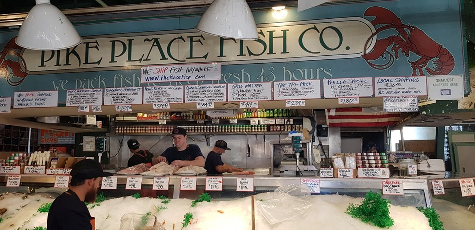

Rời Los Angeles bằng phi cơ hảng American Airline, sau một thời gian lơ lững trên không, từ ô cửa sổ tui nhìn xuống địa phận của Seattle, phi cơ hạ dần độ cao phóng tầm mắt ra xa tui thấy như một bức tranh sơn thủy khổng lồ hiện ra, cái làm tui thích thú và có cảm tình với vùng đất này là nơi đây mật độ rừng rất lớn, nhìn những mảng màu xanh chen lẫn phố xá thật hài hòa, đặc biệt nhất tuy là vùng đất nằm trên độ cao khá lớn so với mặt nước biển nhưng khí hậu rất mát mẻ do có rất nhiều hộ tự nhiên chứa nước ngọt quanh năm, cũng qua ô cửa sổ của phi cơ tui thấy nhiều người vui chơi cắm trại ven hồ, khung cảnh này có chăng trước đây tui chỉ được xem qua màn ảnh của truyền hình, tui có cảm giác cuộc sống nơi đây không ồn ào tấp nập như bên California.
Ra khỏi phi trường sau khi qua máy soi chiếu và kiểm tra giấy tờ (mặc dù là ga nội địa nhưng lực lượng an ninh kiểm soát thật chặt chẽ như các ga hàng không quốc tế) tụi tui lên Taxi để về khách sạn, trên đường đi tự dưng tui nhận được một cuộc gọi qua Messenger, tui rất ngạc nhiên khi người gọi cho mình là thằng Khánh, một đứa em thân quen từng đi làm rừng với tui ở công trường khai thác lâm sản ở Đakia huyện Phước Long tỉnh Sông bé ( Khánh cũng là nhân vật chính trong truyện ngắn tui viết trước đây có tên: "Ân tình không phai", truyện này tui kể lại nỗi nhọc nhằn và đời sống vất vả khi làm người đi "phá sơn lâm", Khánh cùng gia đình vừa quay về Mỹ cách đây vài tháng khi thăm nhà ở Sài gòn, anh em tụi tui gặp nhau tại nhà tui, hai đứa mừng mừng tủi tủi vì không ngờ có ngày gặp lại sau một thời gian bặt tăm nhau.), tui bấm máy và trả lời:
- A lô. Anh đây Khánh ơi, gọi có chuyện gì không Khánh.
Khánh biết tui đến Seattle để đi thăm Hight School nơi "chú Bảo" sẽ nhập học tại đây, Khánh trách nhẹ:
- Trời, anh qua đây mà không cho em biết để em đón anh, hiện giờ anh ở đâu.
Khi biết tui ở một khách sạn cách nhà của Khánh hơn hai mươi phút lái xe, Khánh hẹn tui sáng mai sẽ đến đưa tụi tui vô tận trường luôn, khỏi phải thuê Taxi vừa tốn kém vừa không chủ động thời gian đi đây đó ngắm cảnh và mua sắm.
Về đến khách sạn tiền Taxi gần chín mươi Dollar, gửi ông tài xế thêm ít tiền cho vui ông cảm ơn tụi tui thật nhiều vì tiền "típ" khá "sộp ", vô khách sạn lấy phòng anh nhân viên ở quầy lễ tân lấy danh sách dò với Passport đúng tên ba người đã đặt khách sạn trước đây vài ngày, anh ta trao chìa khóa và chỉ chiếc xe đẩy để tui chất mấy vali đưa lên phòng, đây là khách sạn nhỏ ở một địa phương xa "kinh thành" nên các vật dụng cũng không được hoàn hảo, chiếc xe sút tay gãy gọng khi tui chất mấy cái vali lên, nó xiêu vẹo như "Răng bà già", sau một hồi sửa lại thì cũng tạm xài được, anh Lễ tân có nước da ngâm đen nhìn hai ông cháu đẩy chiếc xe vô thang máy với cái nhìn ái ngại vì thấy mấy vali nặng trịch.
Vô phòng khách sạn, đưa mắt nhìn quanh một lượt thì chú Bảo nhà ta phán một câu "xanh lè":
- Khách sạn này thua khách sạn ở Hollywood City và khách sạn Paris ở Las Vegas xa lắc hà ông ngoại.
Tui cười và nói với Bảo:
- Con ơi, đi tour là vậy họ thiết kế có này có kia, lúc thì "năm sao" khi thì "ba sao" mình phải chấp nhận thôi, miễn sao đừng gặp phải khách sạn "Ba xạo" là ok rồi, giống như một số nơi ở bên mình, phòng ốc,thiết bị phục vụ chừng "hai sao" mà họ tự gắn "ba sao" khi mình vô ở mới biết là "Ba xạo" chứ nào phải "ba sao"
"Chú Bảo" nghe tui nói tiếu lâm như vậy nó cười cười mà mặt hơi nhăn nhăn, vì đang ở trên "cung trăng" nay rơi xuống trần gian nên hơi bị hụt hẫng.
Cất hành lý xong, rửa ráy mặt mũi cho tươi tỉnh ba tía con gọi xe Uber (lúc này tui sử dụng Uber để gọi xe, vì đi taxi mình không biết số tiền sẽ trả, ngược lại Uber họ thể hiện cước của chuyến hành trình tức thì, nên mình không phải lo lắng số tiền mình phải trả.)
Ông tài xế chở ba tía con tui vô trung tâm thành phố, ông chạy qua những đường phố mà ông gọi đây là khu phố của nhà giàu (tui nhìn thấy họ đi những chiếc xe thật đẹp và đắc tiền) phố xá thật đẹp, ở đây có những con đường đỗ dốc thật lớn và dài, nó y hệt con đường ở Hollywood city nơi đã xảy ra bối cảnh rượt đuổi xe với tốc độ thật cao của những bộ phim hành động do tài tử Hollywood trình diễn, khu Downtown của Seattle rất rộn rịp, ông tài xế Uber đưa tụi tui đến một khu chợ nằm sát mé biển phía sau chợ, nơi có bến tàu để du khách xuống đi ngắm cảnh ven biển.
Đi lòng vòng chợ, hàng hóa thật phong phú, người bán cũng ngồi ở những cái quầy như mấy bà bán hàng ở chợ Sài gòn, dạo lòng vòng mỏi chân nên khi nghe mấy cậu thanh niên trong gian hàng cá vừa lựa cá vừa ca hát reo hò thật vui tai, khi lựa được vài con cá theo yêu cầu của phía ngoài, bên trong gian hàng có thanh niên nọ cầm con cá bằng hai tay rồi cậu ta quăng mạnh con cá ra phía trước gian hàng cho một thanh niên bên ngoài chụp, con cá được anh ta bỏ lên cân rồi cho vào cái khay nhựa chứa đầy nước đá bào ướp cá để giao cho khách, họ làm việc rất nhịp nhàng và chuẩn xác, mỗi lần như vậy du khách dừng lại xem và vỗ tay cổ vũ cho các chàng buôn cá tài hoa này.
"Chú Bảo" thấy cảnh này vui quá nên đứng xem mải mê, đến lúc phải mua cái gì bỏ bụng nên tui hối chú ta:
- Đi nè "Chú Bảo" ở đó coi hoài là đói đó nha ông.
Sau khi mua vài món ăn, tui gọi Uber đưa về khách sạn qua đêm để lấy sức cho ngày mới trên vùng đất Seattle.
Bảy giờ sáng xuống phòng ăn sáng, vài miếng bánh mì nướng trét bơ, ly trà, hoặc cà phê và ít chuối cũng đủ năng lượng cho ngày mới.

.Đúng giờ hẹn, Khánh đến khách sạn đưa tía con tui ngôi trường nơi Bảo sẽ học, packing nơi đây rộng lớn nên đậu xe rất thoải mái, khuôn viên trường nếu đi bộ để thăm viếng toàn bộ các nơi nhiều khi đi cả ngày cũng chưa hết, tui choáng ngợp với cảnh vật của ngôi trường này, tụi tui đang "lớ ngớ " không biết nên bắt đầu từ đâu, thời may có một bà Mỹ đang bước từ xa đến, có lẽ bà là phụ huynh kỳ cựu nơi này nên bà đi một cách dứt khoát, khi bà đến gần nhỏ con tui hỏi thăm thì bà ân cần chỉ vẻ, chỉ xong nhưng bà nói cứ đi theo bà sẽ đến nơi cần đến.
Lên lầu của một dãy nhà, tụi tui đến đúng cái văn phòng nơi tiếp nhận học sinh đến nhập học, với thái độ thật thân thiện, một cô trong văn phòng khi biết mục đích của gia đình cho chú Bảo nhập học ở đây, cô rất vui mừng và ngạc nhiên vì ít có trường hợp nào phụ huynh từ nơi rất xa đến tìm hiểu trước khi cho con mình vô nhập học, cô ân cần chỉ vẻ mọi sinh hoạt nơi này, cô tặng ít quà cho Chú Bảo để chào mừng học sinh tương lai của trường, Cô (Hiệu trưởng) cùng một vài vô giáo cùng đứng chụp chung với gia đình tui một tấm ảnh lưu niệm tại văn phòng, sau đó cô gọi một học sinh đang phụ việc văn phòng đến, cô giao nhiệm vụ em này đưa tụi tui đi thăm những nơi chú Bảo sẽ học tập, ăn ở, vui chơi sinh hoạt.
Cô bé này người nhỏ nhắn dễ thương, em lớn hơn Gia Bảo hai tuổi và đã nhập học ba năm trước, tui rất vui mừng khi biết em là người Việt mình, nhà ở quận Bảy thành phố Sài gòn, Vân liến thoáng giới thiệu về mình và các bạn sinh viên sẽ giúp cho Bảo sau khi nhập học, Vân đưa cả đám tụi tui đi giới thiệu khắp nơi, qua nhận thấy tui và mấy cháu rất ưng ý với cơ sở vật chất và điều kiện học tập ở đây, hy vọng một ngày gần đây sắp tới Bảo sẽ là học sinh chính thức ngôi trường trong mơ này.
Chia tay em Vân tụi tui ra về với sự quyến luyến lạ lùng, Khách chở hai má con chú Bảo đến điểm hẹn để cùng với đoàn khách khác tham gia tour vô viếng nhà máy Boeing tại Seattle này, sau khi thả hai đứa xuống điểm hẹn chờ xe đến chở, Khánh chở tui đi lòng vòng rồi đánh xe ghé thăm nhà Khánh cho biết, Anh Khâm anh của Khánh (Anh Khâm cũng tham gia đi phá sơn lâm với tụi tui, nhưng vùng sơn lâm chướng khí không hạp với sức khỏe của mình nên sau một tuần anh quay về Sài gòn làm việc khác) chờ sẳn trong nhà, gặp anh Khâm tui mừng vô cùng, mấy anh em chụp ảnh lia lịa để lưu niệm, sau khi uống nước ở nhà Khánh, tụi tui ghé qua thăm nhà anh Khâm cách nhà Khánh chừng mươi phút lái xe.
Nhà anh Khâm thì trồng hoa và trang trí vui mắt hơn bên nhà Khánh, hoa mười giờ trồng trước nhà khoe sắc thắm chen cạnh đó vài loại hoa khác đẹp lạ lẫm lần đầu tui mới gặp.
Trong khi hàn huyên tâm sự nhớ lại một thời đã qua, anh Khâm đãi tui và Khánh hai tô mì hoành thánh ngon thấu trời, vùng Gia định hiện nay có mì Minh Sanh và Sanh Ký ở ngã tư Bình Hòa rất ngon, nhưng so với tô mì chị Dung vợ anh Khâm nấu nó ngon gấp bội, nước xương hầm rất ngọt, sợi mì và viên hoành thánh nhìn là muốn ăn liền, tô mì anh làm quá lớn tui ráng phình bụng ra để nuốt và nuốt.
Ăn chưa kịp tiêu hóa, anh còn cho ăn Trái cherry vàng thật ngon ngọt, chưa hết nha, anh mời ly cà phê sữa đá ( trộn với nhiều loại cà phê lại) rất ngon.
Cuộc vui nào rồi cũng tàn, chia tay anh Khâm, Khánh chở tui về trả lại khách sạn xuất phát lúc sáng, tui chạnh nghĩ:
"trên đời này có hạnh phúc nào hơn khi mình bơ vơ nơi đất khách, bổng dưng gặp người quen tận tình giúp đỡ mình như Khánh khiến tui cảm động vô cùng, còn cảm động hơn khi bà xã của Khánh nhắn tin tiếc rằng không có dịp gặp, và tiếc rằng tui đã đặt khách sạn trước rồi, nếu không thì nhà Khánh dư sức chứa tụi tui tá túc vài ngày là chuyện nhỏ như con thỏ"..
Sáng hôm sau tui quay lại phi trường Seattle để lấy vé bay về Melissa tiểu bang Texas để thăm gia đình (má Tư) và con gái Út tui đang học nơi đây...
Saigon. 18.7.2019 (14:07)